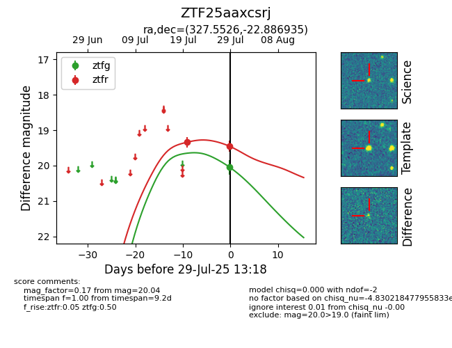

Target ZTF25aaxcsrj at 2025-07-29 13:18, see:
FINK: fink-portal.org/ZTF25aaxcsrj
Lasair: lasair-ztf.lsst.ac.uk/objects/ZTF25aaxcsrj
ALeRCE: alerce.online/object/ZTF25aaxcsrj
alt names
ZTF25aaxcsrj (ztf,fink)
coordinates:
equatorial (ra, dec) = (327.5526,-22.88693)
galactic (l, b) = (28.5072,-48.93793)
photometry
last ztfg=20.04, ztfr=19.45
1 ztfg, 2 ztfr detections
